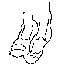
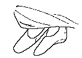

Shoes (c.2000 BCE) From the photograph, these appear to be irregularly shaped fur. Boots
(c.1000 BCE) From the photograph, these appear to be felt.
Boots
(c.1000 BCE) From the photograph, these appear to be felt.
Shoes (c.200 BCE) From the photograph, these appear to be felt.I have not been able to find out much information on these shoes, other than a few photographs. As I can, I'll replace it with better info. The 'Tarim Basin mummies' are a number of burials from the desert of the Xinjiang region. They are probably of the Indo-European people known to history as "Tocharians".

Shoes (c.2000 BCE) From the photograph, these appear to be irregularly shaped fur.Boots
(c.1000 BCE) From the photograph, these appear to be felt.
Shoes (c.200 BCE) From the photograph, these appear to be felt.Return to [Index]
Footwear of the Middle Ages - Historical Shoe Designs/Tarim Basin shoes, by I. Marc
Carlson. Copyright 2000
This page is given for the free exchange of information, provided the Author's Name is
included in all future revisions, and no money change hands, other than as expressed in
the Copyright Page.